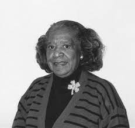

Mary Jackson
“Temos um potencial poderoso em nossa juventude, e precisamos ter a coragem de mudar idéias e práticas antigas, para que possamos direcionar seu poder para bons fins”
Mary Winston Jackson (Hampton, 9 de abril de 1921 - 11 de fevereiro de 2005).
Foi uma matemática e primeira engenheira aeroespacial do National Advisory Committee for Aeronautics (NACA), que se tornou a atual NASA.
Biografia
Vida
Mary Jackson nasceu em Hampton, uma cidade no Estado da Virgínia, a 300 km de Washington, DC. Hampton é uma cidade de maioria negra (51% da população), e abriga uma instituição de ensino superior voltada à inclusão racial. É a Hampton University, fundada em 1868 por ativistas negros e brancos, logo após a Guerra Civil Americana, com a ideia de prover educação de primeira linha a quem tinha nascido como escravo. Uma das alunas ali foi Alberta Williams King, mãe de Martin Luther King, que estudou magistério lá no início do século 20.
Seus pais Frank Winston e Ella Scott Winston, nascida no Hampton, Virgínia, Mary tinha notas altas na escola e no ensino médio. Obteve o bacharelado em Matemática e em Física pela Universidade Hampton, em 1942.
Não foi uma trajetória simples. Os EUA dos anos 1940 viviam num sistema de apartheid. Em boa parte dos Estados, brancos e negros não podiam estudar nas mesmas escolas, nem usar os mesmos banheiros, e o “casamento interracial” era crime. No mercado de trabalho, então, era como se a escravidão não tivesse terminado - uma ferida que ainda está longe de fechar, seja nos EUA, seja aqui.
Foi líder das bandeirantes por mais de trinta anos e era conhecida na comunidade negra por ter ajudado as crianças a construir uma miniatura de um túnel de vento. Mary foi casada e teve dois filhos.

Carreira
Depois de se graduar na Universidade Hampton, Mary ensinou em Maryland. Ela então foi para o National Advisory Committee for Aeronautics (NACA), em 1951. Começou sua carreira como matemática no Langley Research Center, ainda em Hampton. Em 1953, ela foi para o Compressibility Research Division. Depois de 5 anos na NASA e de vários cursos de extensão, Mary foi para um programa especial de treinamento e foi promovida a engenheira aeroespacial. Trabalhou com análise de dados em experimentos com túnel de vento e de aeronaves experimentais no Departamento Teórico de Aerodinâmica, na Divisão de Aerodinâmica Subsônica-Transônica, em Langley. Seu objetivo era de entender como o ar fluía, incluindo empuxo e arrasto. Muitos anos depois, ela foi designada para trabalhar como engenheira aeroespacial na NASA.
Mary trabalhou para ajudar mulheres e outros grupos minoritários a avançar em suas carreiras, incluindo aconselhamento sobre como estudar para mudar seus títulos de "matemáticas" para "engenheiras", para aumentar suas chances de promoção, como ela mesma fez. Depois de 34 anos na NASA, Mary alcançou o nível mais alto como engenheira sem ter que se tornar supervisora. Ela decidiu receber menos e mudar de posição para se tornar administradora no campo de Oportunidades Iguais. Depois de trabalhar no quartel-general da NASA, ela voltou a Langley onde trabalhou por mudanças e para destacar mulheres e outros grupos minoritários em suas áreas de atuação.
Ela administrou o Federal Women's Program no escritório do Programa de Oportunidades Iguais e no Programa de Ações Afirmativas. Mary trabalhou na NASA até sua aposentadoria, em 1985.

Principais Contribuições para a Tecnologia
Foi membro da primeira irmandade fundada por mulheres afro-americanas universitárias, Alpha Kappa Alpha, em Hampton.
Primeira mulher negra com um cargo de engenheira na Nasa.
A agência espacial irá rebatizar sua sede, em Washington, com o nome dela.
Autora ou coautora de 12 artigos técnicos para a NACA e a NASA, com inúmeras contribuições para o programa espacial, como o cálculo da trajetória do voo do Apolo 11, trabalho que lhe concederia o Prêmio de Realização do Grupo Apollo.
Trabalhou em iniciativa gavernamental que promove a inclusão de mulheres no mercado de trabalho, e que mantém um escritório na Nasa até hoje. Lá, Jackson passou a trabalhar para promover a ascensão profissional de outras mulheres negras em cargos de ciência, engenharia e matemática.
Em 2017, teve parte de sua história contada no filme Estrelas Além do Tempo, que fala sobre ela e suas colegas da West Area Computing Section.
Fonte
Acesse aqui